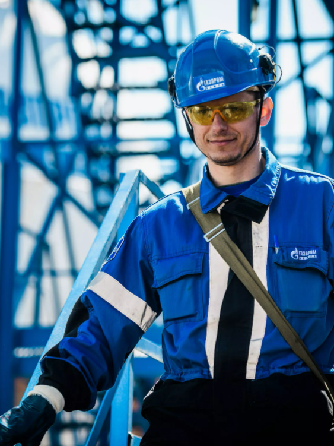
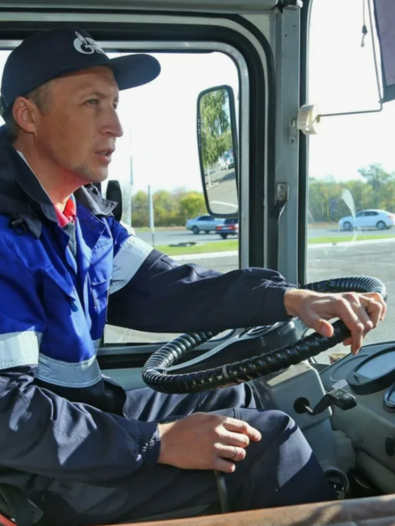
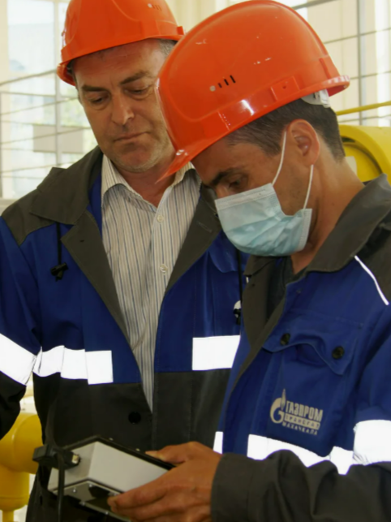

службы по эксплуатации газораспределительных станций
↓ Узнать больше ↓

Инженер
по контрольно-измерительным приборам и автоматике
↓ Узнать больше ↓
Машинист
экскаватора 6 разряда АТЦ
↓ Узнать больше ↓

Водитель автомобиля
с категориями В и С
↓ Узнать больше ↓

Приборист
5 разряда
↓ Узнать больше ↓
❮
❯
Cлесарь-ремонтник 4 разряда линейно-эксплуатационной службы
Обязанности:
1. Проведение слесарной обработки деталей, труб, сверление отверствий;
2. Выполнение монтажных восстановительных работ на газопроводах;
3. Устранение утечки газа на газопроводах и запорной арматуре;
4. Подготовка поверхности труб и нанесение антикоррозионной изоляции на трубы;
5. Знание и выполнение установленных правил поведения и порядка действий при угрозе возникновения аварий и чрезвычайных ситуаций,
оказание необходимого содействия в проведении аварийно-восстановительных и других неотложных работ;
6. Качественное выполнение в срок работ по плановому осмотру и ремонту оборудования, предусмотренных
планом графиком и по указаниям начальника ЛЭС.
Требования:
1. Среднее (полное) общее образование;
2. Профессиональное обучение — программы профессиональной подготовки по профессиям рабочих.
Условия:
1. Дюртюлинский район, с. Москово, ул. Алга, д. 2 (30 км. от г. Дюртюли, 70 км. от г. Уфы);
2. Постоянная;
3. Полный рабочий день;
4. 40 часовая рабочая неделя с двумя выходными (суббота и воскресенье). dyur-grizvanova@ufa-tr.gazprom.ru +7(347)237-56-80 доб. 45–205
Слесарь аварийно-восстановительных работ 4 разряда
Обязанности:
1. Обслуживание и поддержание в рабочем состоянии водопроводных сетей;
2. Установление, регулирование и ремонт механических приводов.
Требования:
1. Среднее (полное) общее образование;
2. Профессиональное обучение — программы профессиональной подготовки по профессиям рабочих;
3. Знание:
- Устройства сальниковых компенсаторов на трубопроводах различных диаметров;
- Устройства и принципов работы механических, гидравлических и электрических приводов,
применяемых при открывании и закрывании больших задвижек;
- Правил безопасности труда, производственной санитарии, ОТ,П и ПБ, БДД и электробезопасности.
Инженер службы по эксплуатации газораспределительных станций
Обязанности:
1. Обеспечение выполнения требований производственной безопасности;
2. Ликвидация аварий и инцидентов на ГРС, выполнение капитального и текущего ремонтов технологического оборудования;
3. Оформление в установленном порядке документации на выполненные ремонтные работы в т.ч. по ликвидированным авариям и инцидентам;
4. Непосредственное участие в продувках, испытаниях, наладке, и пуске вновь вводимых в эксплуатацию ГРС;
5. Постоянный контроль за всеми проводимыми ремонтно-профилактическими работами на ГРС;
6. Проведение регулярного контроля за загрязнением окружающей среды при эксплуатации ГРС совместно с ответственным по охране окружающей среды филиала;
7. Разработка планов проведения огневых и газоопасных работ.
Требования:
1. Высшее образование (техническое);
2. Знание: основных типов и технических характеристик оборудования ГРС;
3. Без требований к опыту работы.
Условия:
1. Дюртюлинский район, с. Москово, ул. Алга, д. 2 (30 км. от г. Дюртюли, 70 км. от г. Уфы);
2. Постоянная;
3. Полный рабочий день;
4. 40 часовая рабочая неделя с двумя выходными (суббота и воскресенье). dyur-grizvanova@ufa-tr.gazprom.ru +7(347)237-56-80 доб. 45–205
Инженер по контрольно-измерительным приборам и автоматике
Обязанности:
1. Своевременное проведение периодических поверок и испытаний оборудования,
аппаратуры и приборов в соответствии с действующими нормами и правилами,
в частности: систем агрегатной и цеховой автоматики, программно-технических комплексов АСУ ТП,
линий редуцирования топливного и пускового газа, агрегатного оборудования, автоматизированной системы пожаротушения,
системы обнаружения загазованности в отсеках агрегатов, антипомпажной защиты, оборудования КИП на утилизаторах тепла;
2. Учет и анализ отказов средств и систем автоматизации;
3. Обеспечение надёжной работы контрольно-измерительных приборов и средств автоматизации путем надзора за соблюдением
правил их эксплуатации и контроля за своевременностью и качеством проведения технического обслуживания и всех видов ремонта
в соответствии с требованиями нормативных документов;
4. Ведение технической и эксплуатационной документации, составление графиков поверок, ремонта средств измерений;
5. Осуществление контроля за эксплуатацией узлов учета (измерения) газа и т.д.
Требования:
1. Высшее образование (техническое);
2. Знание:
- Нормативных и других руководящих материалов по вопросам автоматизации, автоматизации производства;
- Методов выполнения измерений;
- Технических характеристик, конструктивных особенностей, назначение и принципы работы средств измерений;
- Средств сигнализации, защиты газоперекачивающих агрегатов и вспомогательного оборудования;
3. Оперативность, исполнительность, коммуникабельность, пунктуальность.
Обязанности:
1. Знание устройства, принцип работы и технические характеристики экскаватора с ковшом емкостью до 1,25 м3 и его составных частей;
2. Выполнение работы по разработке грунтов различных категорий при различной глубине забоя экскаватором с ковшом емкостью до 1,25 м3;
3. Выполнение работы по перемещению грунта экскаватором с ковшом емкостью до 1,25 м3 в отвал;
4. Выполнение работы по погрузке грунта экскаватором с ковшом емкостью до 1,25 м3 в транспортное средство;
5. Определение траектории черпания грунтов различных категорий экскаватором с ковшом емкостью до 1,25 м3;
6. Транспортирование экскаватора с ковшом емкостью до 1,25 м3;
7. Соблюдение последовательности технологических приемов при выполнении землеройно-транспортных и погрузочно-разгрузочных работ
экскаватором с ковшом емкостью до 1,25 м3 в соответствии с требованиями технологического процесса;
8. Соблюдение правил дорожного движения.
Требования:
1. Среднее (полное) общее образование;
2. Профессиональное обучение — программы профессиональной подготовки по профессиям рабочих;
3. Стаж работы не менее одного года по профессии с более низким (предыдущим) разрядом.
Условия:
1. Дюртюлинский район, с. Москово, ул. Алга, д. 2 (30 км. от г. Дюртюли, 70 км. от г. Уфы);
2. Постоянная;
3. Полный рабочий день;
4. 40 часовая рабочая неделя с двумя выходными (суббота и воскресенье). dyur-grizvanova@ufa-tr.gazprom.ru +7(347)237-56-80 доб. 45–205
Водитель автомобиля
Обязанности:
1. Перевозка личного состава организации к месту проведения работ и выполнение заданий непосредственного руководителя;
2. Проверка постоянно закрепленной техники;
3. Соблюдение правил дорожного движения, законодательства Российской Федерации в сфере дорожного движения, перевозок пассажиров и багажа.
Требования:
1. Среднее (полное) общее образование;
2. Водительское удостоверение категории В,С;
3. Без предъявления требований к стажу работы;
4. Исполнительность, коммуникабельность, пунктуальность.
Обязанности:
1. Выполнение мероприятий по поддержанию средств службы в работоспособном состоянии, предотвращение аварий и отказов оборудования;
2. Регулирование и проверка всех видов тепловых и электрических контрольно-измерительных приборов, авторегуляторов и автоматов питания;
3. Настройка устройства релейной защиты, электроавтоматики, телемеханики.
Требования:
1. Среднее (полное) общее образование;
2. Профессиональное обучение по программам профессиональной подготовки по профессиям рабочих;
3. Без предъявления требований к стажу работы;
4. Исполнительность, коммуникабельность, пунктуальность.